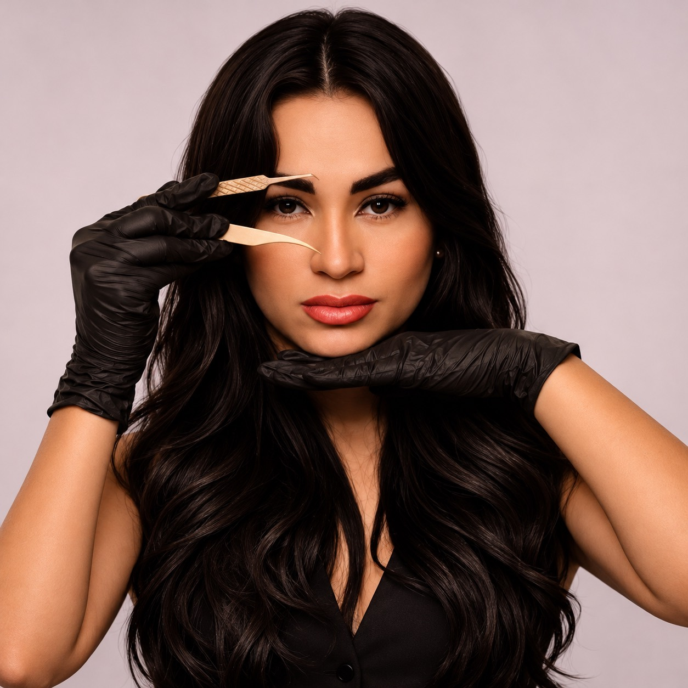

Extensão de cílios
Do natural ao marcante, com diferentes técnicas e uma escolha de efeito alinhada à avaliação dos seus fios.
Beleza, técnica e naturalidade em cada olhar. Sou Thays Araújo, lash designer, brow artist e educadora. Minha missão é realçar olhares e devolver autoestima.
Explore os olhares ↗
Determinação, sonhos e cuidado com cada pessoa que passa pelo meu caminho.
Meu dia a dia no Instagram ↗Antes de ser dona do meu próprio estúdio, já fui babá, atendente e gerente. Hoje, como lash designer, brow artist e educadora, encontrei na beleza uma forma de realçar olhares e ajudar outras mulheres a se sentirem bem consigo mesmas.
Sou mãe de dois, casada e cristã. A família é parte essencial da minha vida, e a fé acompanha meus passos. Sou movida por desafios, cheia de metas e sonhos, e acredito em ser 1% melhor a cada dia.
Fora do estúdio, amo treinar e estar com a minha família. Adoro praia, mas confesso: prefiro uma piscina! É com esse jeito leve, divertido e determinado que recebo cada nova história.
Atendimento em Rio das Pedras · Rio de Janeiro
Olhares do perfil da Thays para você conhecer os efeitos e encontrar a sua próxima inspiração.
Conheça mais trabalhos no perfil @thaysaraujo_lashdesigner ↗.
Cílios, sobrancelhas e formação profissional. Cada atendimento começa com a escolha de um cuidado que respeita a sua beleza e o seu objetivo.
Quero descobrir meu estilo ↗Do natural ao marcante, com diferentes técnicas e uma escolha de efeito alinhada à avaliação dos seus fios.
Design, henna e brow lamination para valorizar a expressão e a harmonia do seu rosto.
Formação com a Thays para quem quer dar seus próximos passos no universo do lash design. Consulte turmas e conteúdo pelo WhatsApp.
Consulte valores, técnicas disponíveis e horários diretamente com a Thays.
Pequenos hábitos fazem parte da rotina de quem usa extensões. Siga sempre as orientações da profissional que realizou o procedimento.
Compartilhe suas referências e o efeito que deseja. A avaliação dos fios naturais ajuda a definir uma aplicação adequada para você.
Evite puxar ou esfregar os fios. Faça a higienização com os produtos e a frequência indicados pela sua profissional.
O intervalo varia conforme a técnica, o ciclo dos fios e a rotina de cuidados. Confirme a recomendação durante o atendimento.
Procure uma profissional para a remoção. Não puxe as extensões nem tente removê-las com receitas caseiras.
Converse comigo para escolher sua técnica, agendar um atendimento ou saber mais sobre os cursos.
Agendar pelo WhatsApp ↗